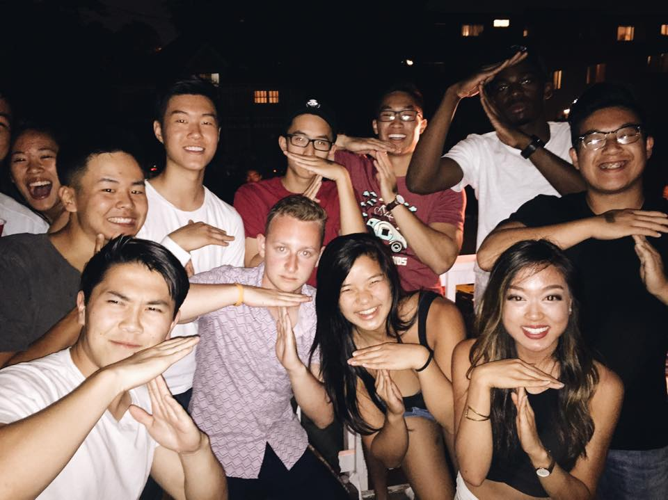

Anyone who is reading this, just read it. At the time that I started to write (January 22nd, 2017) this, I've only told two people whom I consider my closest forms of emotional support, so making myself transparent and honest means something to me.
I'm not looking for arguments or debates. All I really want for you to do is understand my perspective on what I think happiness is, then maybe think to yourself about what happiness is.. Also forgive me for poor writing and structure, it's hard to organize all these thoughts.
Well... I think the picture above was the last time I was truly happy with my plans, my goals, my health, my mentality, my stability, my emotions, myself... my life.
Sadness
That picture was from December of 2015 for reference. It was about the time where I thought I had myself figured out and I found a girl I truly finally loved. But this isn't about her, or me, it was just the fact that it was when I was happy. I didn't have much to complain about, conversations with people were normal, not negative in nature and for the most part were light-hearted and fun. I had something to be excited about, I found someone who’s passionate and someone I loved. But several months down the line I'm faced with a dilemma that I won't explain, but I had to find an internship that was based in the Bay Area so I can stay with my friends, family, and above all else at the time, my girlfriend.
I’m a Computer Science major, so my course of action was to do Software Engineering (SWE), as in apply for SWE internships, interview for them, and apparently, fail them. I wasn’t a big fan of CS as much as I was a fan of the tech industry, and I definitely was apathetic towards data structures and algorithms. I wasn’t bad at them… I wasn’t good at them either. Rejection after rejection after rejection, running into seldom long distance relationship problems, and constantly questioning myself and who I was and needed to be in order to succeed, caused me to lose an identity. All this accumulation of school work, relationships, and stress piled on one another. In a sense I got so used to trying to please other people that in a sense I lost a bit of myself. I got so involved with how people actually functioned emotionally that I found all faults in those around me and especially myself. It led me to what I call an endless cycle of apathy and self-doubt.
I always asked myself why people act a certain way in certain situations and began to think about the big picture. But what is the big picture in anything? Is it wealth, is it fame, is it love, is it a career? What is the most common about every life however, is that it begins with a birth, and ends in a death. Within that death lies a memory of a person. For many however, it's oblivion. This when I started having strange subconscious thoughts, I began to lose emotion for a lot of things, I became less receptive, more bitter, more critical, and most importantly.. less happy.
When so much of my life is based upon the ability to take advantage of opportunities and when the people in charge of these opportunities can dictate my life trajectory, I naturally try to mold myself into the what others people want me to be but in many ways that only hurt me by not being able to be myself. But that's where I think the problem stems from... is I don't know who myself is and what I stand for. All my life I've let people's descriptions of me mold who I am and let myself become. “He’s honest, rational, logical, and he’s kind of an asshole… but in a good way,” were among the descriptions I received and for some reason I never told myself that I wasn’t those things, I just let myself become those things because of precedent.
One strange night something in February or March, in my dream, a sequence of two events that both ended in death: falling straight from the top of a tall building and driving at high speeds into the center median or column. In both these instances within my dream I felt peace, happiness.. an escape via a quick, easy and achievable death. I knew this was wrong, I knew I would never resort to these things ever in reality. But why was it so comforting and why was I so happy to be perished into a memory? I don't know, and to this day I still don't know.
I don't know why I'm sad. These very real dreams have resurfaced more recently when I would wake up in the middle of the night after an extremely vivid dream. Most of these dreams is just me hurting, I'm crying, kneeling, reaching for help but no one is there. The pain is real and I wake up feeling lost. My subconscious is letting itself go in my dreams. I've been trying to find what is causing this sadness. I want to find the source so I can address it, solve it, mitigate it, and ultimately get rid of it. But I can't
Maybe I'm sad because:
I have no special person to say good morning to.
I haven't been lifting regularly since school has been so busy.
I'm not really good at anything, just decent, or average at everything.
I'm not as smart as some of my classmates.
I'm not as athletic as some of the athletes I go to school with.
I'm not eating healthy and am letting myself deteriorate.
I lack motivation to get up, which is why I sleep in until 5PM on weekends.
I binge drink when I get the chance to.
I enjoy spending time alone so I don't rub off on other people.
I try not to perpetuate negativity but do so anyways.
I have no special person to say good night to.
Maybe I spend so much time trying to figure out what I'm sad about, that I dig myself a deeper hole by finding flaws in myself, the world, and others; all the while forgetting the beauty and goodness that exists.
Projecting Outwards, Bottling Inwards
I mentioned it before, people tend to think of me as a very calculated person in that I try not to consider emotions when making decisions. But that is something that has changed in me recently. All that sadness caught up to me and is finally beginning to express itself in ways I couldn’t imagine: impulsivity, tears, irrationality, subjectively.
But this is all in reflection towards the way I acted before. When I was getting rejected by companies left and right, not getting the grades I wanted when walking in and out of classrooms, not living up to the expectations I imposed upon myself. I became insecure, I doubted my own abilities, and I began to see the faults in who I was as a person. This is why I began to drive change in myself and essentially find who I actually am as a person, which is definitely not the person I was.
When I was insecure, I would find qualities, actions, or characteristics I didn’t like about myself and try to find them in other people. I guess this made me feel better about myself because it made people seem like they were, for lack of a better phrase, “on my level.” This made me feel happier and more pleased with myself because if other people have the same faults I do, that means I’m normal. If I consistently talk down others in an 3rd person point of view when driving or spectating, it makes me look better from afar. I pushed all my insecurities onto others because I was susceptible to those faults. That was my logic at the time… and it was disgusting, malicious, and toxic. It made me miserable but I didn’t know it, all I thought of it was me trying to prove my lack of worth to the world because I thought I had nothing to offer. There was one person who this extremely affected, and it was my girlfriend at the time. It not only consumed me and took away from who I actually was as a person, but also who she was. She hated it, despised it, and wanted to get away from it. I don’t blame her either, I wanted to get away from it too. It took the months of September, October, November, December, and January to self-reflect and really deduce and come to terms with who I was, what was making me sad, and what I wanted to do fix all of this. After all, change doesn’t happen over night, it takes time.
Reading People and Empathy
To a great extent, I understand people, I can “read” people according to my friends. But this goes without saying that I’ve been through so much that I understand how people act in certain situations. I was a bitch at one point, I was an insecure individual at another, I was an asshole, and I frankly have held a handful of different personalities, qualities, characteristics, and faces in my life. I’ve fundamentally changed so many times throughout my life that I sometimes do not know how to describe myself.
But it goes without saying that “it takes one to know one.” This is only the case for most people to understand others because of empathy, which is the ability to understand and share the feelings of another. I’ve had a handful of emotional states and experiences that I know what it’s like to be in certain shoes in certain situations. So when people accuse me of being odd, or a sociopath, or a pompous assumer, I’m not trying to be.. it’s just that I know what it’s like to have to deal with myself in certain situations and how I acted, what I thought, and how I went about expressing myself. Granted people do express themselves in different ways, but it takes understanding and empathy to know that sometimes we just need to ask if someone is okay, if everything is ok, and for the most part, if there is something we need to know. We are social animals, we need each other, let’s be nice to each other. Give each other our patience and time. Let each other change and self-improve. I wish I had people who reached out to me.
Not a casual, “do you want to talk about it?” but a “hey, can we sit down or hang out one-on-one for a moment? I want to talk to you about something or about what is going on, maybe what you’re thinking about. Because for the most part, depression stems from not being able to express what you feel and you internalize all these emotions that they consume you.
When you’re alone, the only way to let loose is to cry at night, to cry in the shower, so no one will know and our problems remain our own. The last thing we want to do is push our problems onto other people, but one thing that is important for people that are in my situation is to understand, that those around you care, and want you to be okay and happy. I wish people knew to ask, but I hid it so well. So for those who hide it well, please just do yourself a favor and tell someone, cry on their shoulder, do whatever it takes but please let those emotions run.
How to Help?
I wrote this section because my friend asked about how she should go around helping people like me, if she had the chance to do so.
Well… it’s different for everyone. But I can explain myself since a lot of people were curious and asked me when I confided in them and asked for help.
For me, my depressive state was the result of self-imposed hate, expectations, and doubt of who I was and wanted to be. It was purely internal conflict and for most situations, there’s no way to really help someone who’s problems and sadness are internalized. There is no truly definitive way because you don’t know what I’m thinking or anyone else is thinking for that matter.
But to help someone understand why they are sad or to relieve someone or take their mind off of it, is to give them fulfillment, things to look forward to like an event at the end of the week or a fun outing with friends. Because that’s all most people in general look for… fulfillment, things to care about.
Hell, first world problems exist because people who don’t really have “problems,” want to create problems for themselves that they can fix and help them “accomplish a goal.”
Going back to my points earlier. I think the best way to help someone who was or is in my position, is to reach out. I felt cornered, I felt lonely, I felt insecure… but no one will know. I project outwards the opposite of how I was or felt because I do not want people to know that I am weak. I think I wish I had a chance to just talk about it. It being my emotions, or insecurities… anything. Without talking about it, we don’t get a chance to reflect because it’ll all be ignored and suppressed.
Happiness
You can't be happy if you don't want or let yourself be happy. Likewise you can't love others when you can't love yourself.
This is something I tell a lot of people that talk to me when they vent about a rut they're in, a relationship problem that they're trying to solve, a career obstacle they've encountered, or anything that will fade their smiles. It is something I pushed upon myself. I always thought depression was stupid and that happiness was a mindset. But it was because I didn’t want to accept that I was susceptible to this same exact thing that other people suffered from. I was so engaged in upholding this statement that I put a shroud over how I felt and suppressed my true emotions. Which is why as of late, it has all caught up to me and I am allowing myself cry things out, it’s only healthy… but it feels great. This is one of the things that made me realize I am only one step closer to finding happiness.
My version of pursuing happiness is being able to look forward to something positive, something that gets you going through your day, your week, your month, your year, and quite possibly your life. It’s pursuing hobbies, jobs, careers, people, girlfriends, boyfriends, families, goals, anything that you are passionate about or love that makes people happy. This may explain why a lot of people try to find fulfillment in a variety of different things. Setting new goals, always wanting more, and ultimately never being content.
Well, I used to think happiness was complacency and the ability to be content, because then you don’t have to work hard for anything anymore, and working hard is mentally and physically taxing. I was wrong, I think happiness is having something you want to pursue, then working towards it, and accomplishing it. Then you repeat the cycle all over again. If my girlfriend is happy, well I’ll find a way to make her happier. If you have a nice car, well I’m going to find a way to get a nicer car than my already nice car. This is how I’m going to be happy. It may not work, but it’s a start to figuring out what really does. We can’t have everything in life but we can definitely hope for the best.
Not The End
Well so what? What's the point of this blog post? It’s to empathize with anyone that’s in my position, to put myself out there, and to let people know that people change according to experiences and the ability to listen to others. You change for people you care about, you change for yourself, and you change because you want to. But people do change, only if you let them and give them a chance. Happiness what I'm trying to figure out. I just want to do my best to sort out all the emotions that run through my head.
A Temporary Remedy
Find things that make you happy, even if for a little. Memories make me happy.
Re-emulating these memories, keeps me alive
Family  Moments with Friends Brothers from Other Mothers